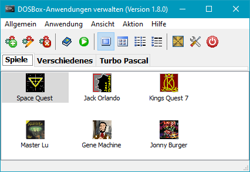
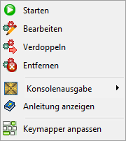
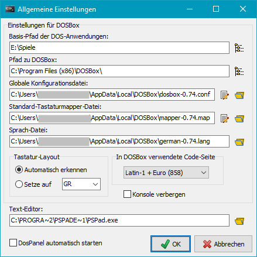
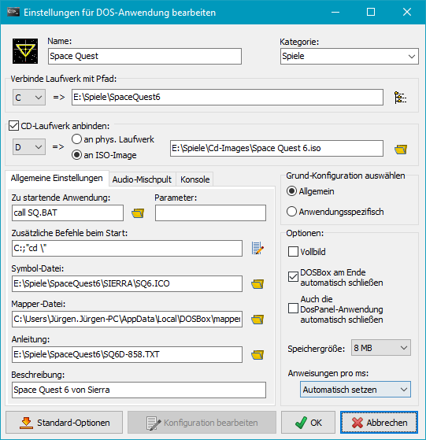

|
DosPanel - Windows-Desktop für DosBox |
| © 2014-2018, J. Rathlev, D-24222 Schwentinental |
 Übersicht
Installation
Befehlszeilenoption
Bedienung
Beispiel
Autor
Lizenz
Übersicht
Installation
Befehlszeilenoption
Bedienung
Beispiel
Autor
Lizenz

Das Programm stellt eine grafische Bedienoberfläche für den DOS-Emulator
DOSBox bereit.
Der Benutzer kann alle wichtigen Einstellungen, die für das Starten von
DOS-Programmen unter DOSBox erforderlich sind, vornehmen, ohne sich
mit der für einen Laien etwas komplexen Syntax der Konfigurationsdatei von
DOSBox beschäftigen zu müssen.
Für jede DOS-Anwendung können individuelle Einstellungen
vorgenommen werden. Sie werden vom Programm automatisch gespeichert.
Zur besseren Übersicht lassen sich die DOS-Anwendungen verschiedenen Kategorien
zuordnen.
Die Funktionen in der Übersicht:
- Anbinden von Laufwerken für eine DOS-Anwendung:
- Beliebiges Verzeichnis auf dem Host-System als Festplattenlaufwerk
- Beliebiges Host-DVD/CD-Laufwerk oder ISO-Image als CD-Laufwerk
- Auswahl einer Anwendung oder Batch-Datei mit opt. Parametern, die
automatisch in der DOSBox gestartet wird
- Eingabe von beliebigen DOS-Befehlen, die vor dem automatischen Start der
o.g. Anwendung ausgeführt werden (z.B. ein Verzeichniswechsel)
- Auswahl eines Symbols für die Anzeige in DosPanel
- Optionale Auswahl eines Keymappers
- Auswahl einer Anleitung (z.B. Text oder PDF) für die DOS-Anwendung
- Zusätzlicher Kommentar
- Zusätzliche Optionen: Vollbildanzeige und automatisches Beenden von DOSBox
- Einstellung der Größe des DOS-Arbeitsspeichers
- Einstellung der Emulationsgeschwindigkeit
DOSBox
DOSBox ist ein Emulator, der es ermöglicht DOS-Anwendungen auf verschiedenen
Plattformen und Betriebssystemen (z.B. Windows, Linux) auszuführen. Damit können
z.B. viele alte DOS-Spieleklassiker
wieder zum Leben erweckt werden. Weitere Infos und eine Downloadmöglichkeit gibt
es bei DOSBox. Auch eine
ausführliche
englische Dokumentation ist vorhanden.
Das Programm funktioniert unter allen aktuellen Windows-Systemen. Zur Installation
wird das ausführbare Setup-Programm gestartet. Unter Windows 7
sind dazu die Rechte eines Administrators erforderlich.
Vor der ersten Inbetriebnahme sollte in jedem Fall die aktuelle Version von
DOSBox installiert und einmal gestartet werden. Die deutsche Sprachanpassung
und Dokumentation findet man
hier.
- /ini:[IniFile]
- Das Programm speichert die Programmeinstellungen in einer Datei DosPanel.ini
ab, die sich standardmäßig im Verzeichnis der Anwendungsdaten des Benutzers befindet.
- Vista, Windows 7 und 8: C:\Benutzer\<Benutzername>\AppData\Roaming
oder C:\Users\<Benutzername>\AppData\Roaming
- Windows 2000 und XP: C:\Dokumente und Einstellungen\<Benutzername>\Anwendungsdaten
Mit der Ini-Option kann das Programm mit einer alternativen Konfiguration
gestartet werden, die sich in einem beliebigen anderen Verzeichnis befinden kann
(z.B. E:\DosBox\DosPanel-1.ini).
Wird in [IniFile] kein Pfad angegeben, wird das Programinstallationsverzeichnis
von DosPanel verwendet.
- Allgemein
- Einstellungen - Grundeinstellungen
- Sprache - Auswahl der Sprache für die DosPanel-Oberfläche
(z.Zt. deutsch und englisch)
- Ende - DosPanel beenden
- Anwendung
- Neu - Hinzufügen einer DOS-Anwendung in
DosPanel
- Bearbeiten - Bearbeiten der Konfiguration
einer DOS-Anwendung
- Verdoppeln - Verdoppeln der ausgewählten
DOS-Anwendung
- Entfernen - Entfernen einer DOS-Anwendung
aus DosPanel
- Keymapper anpassen - Startet den
DOSBox-Keymapper, um individuelle Anpassungen an der Zuordnung
von Tasten auf der Tastatur und am Joystick vorzunehmen.
- Ansicht
- Große Symbole - Anzeige der DOS-Anwendungen
als große Symbole
- Kleine Symbole - Anzeige der DOS-Anwendungen
als kleine Symbole
- Liste - Anzeige der DOS-Anwendungen als Liste
- Details - Anzeige der DOS-Anwendungen als
Liste mit Detailinformationen (z.B. Laufwerkseinstellungen)
- Aktion
- Starten - Starten einer DOS-Anwendung
- Anleitung anzeigen - Anzeige der zu einer
DOS-Anwendung ausgewählten Anleitung
- DOSBox starten - DOSBox ohne
DOS-Anwendung starten
- Text konvertieren - Konvertieren von Textdateien
in verschiedene auswählbare DOS-Codeseiten (z.B. 437 oder 858)
- Hilfe - Information zum Programm

Kontext-Menü einer Anwendung
Nach einem Rechtsklick auf das Symbol einer Anwendung öffnet sich das rechts
dargestellte Kontextmenü. Hilfe zu den Funktionen erhält man duch Klick auf die
Abildung.

Nach dem ersten Start sucht DosPanel nach einer
installierten DOSBox und nimmt die zur Einbindung erforderlichen
Grundeinstellungen automatisch vor. Anschließend sind noch einige individuelle
Einstellungen erforderlich. Die Abbildung rechts gibt eine Übersicht.
Einstellungen für DOSBox
- Basis-Pfad für DOS-Anwendungen: Hier wird der übergeordnete Pfad
für alle DOS-Anwendungen des Benutzers ausgewählt.
- Pfad zu DOSBox: Dieser Pfad sollte bereits automatisch vom
Programm eingetragen sein.
- Datei mit Grundfiguration: Hier steht die Datei mit der von
DOSBox angelegten Grundkonfiguration. Dieser Eintrag wird vom Programm
automatisch vorgenommen. Die Konfiguration kann, falls erforderlich, mit einem
Texteditor individuell angepasst werden. Hinweise zum Format findet man in
der DOSBox-Dokumentation.
- Sprach-Datei: Datei mit den DOSBox-Texten für andere
Sprachen als englisch. Dieser Eintrag wird vom Programm
automatisch vorgenommen.
- Standard-Mapperdatei: Datei mit den Einstellungen für eine Umleitung von
Tastatureingaben und Joystick-Tasten, wie sie für bestimmte DOS-Anwendungen
in DOSBox benötigt werden. Dieser Eintrag wird vom Programm automatisch
vorgenommen. Eine individuelle
Anpassung an die jeweilige Anwendung ist
möglich.
- Tastatur-Layout: Falls die automatische Erkennung in DOSBox
nicht funktioniert, kann hier das Tastatur-Layout (z.B. GR für die deutsche
Tastatur) von Hand ausgewählt werden.
- In DOSBox verwendete Code-Seite: Hier wird die für die Bildschirmausgabe
in DOSBox zu verwendende Code-Seite ausgewählt.
- Konsole verbergen: Beim Start von DOSBox wird in einem zweiten
Fenster die DOSBox-Konsole angezeigt. Auf Wunsch kann diese hier
abgeschaltet werden.
Einstellungen für DosPanel
- Automatisch starten: Wenn diese Option ausgewählt ist, wird
DosPanel bei jedem Start von Windows automatisch geladen
(siehe Autostart-Ordner).
Konfigurieren einer DOS-Anwendung

Ein Klick auf diese Schaltfläche fügt eine neue DOS-Anwendung in DosPanel
hinzu. In dem anschließenden Dialog werden die Einstellungen für diese Anwendung vorgenommen.
Einzelheiten dazu findet man im nächsten Abschnitt.
Die möglichen Einstellungen werden in der Abbildung rechts an einem Beispiel
verdeutlicht:
- Name: Name der Anwendung für die Anzeige in DosPanel.
- Kategorie: Name der Seite, auf der die Anwendung in DosPanel
angezeigt werden soll. Bei fehlender Kategorie wird die Anwendung unter Verschiedenes
eingetragen.
- Verbinde Laufwerk mit Pfad: Auswahl eines Verzeichnisses auf dem Host-System,
das in DOSBox als Hauptlaufwerk (hier C:) verwendet werden soll.
- CD-Laufwerk anbinden an: Auswahl, ob das ausgewählte CD-Laufwerk (hier D:)
mit einem physikalischen Laufwerk des Host-Systems oder mit einem Iso-Image
auf dem Host-System verbunden werden soll.
- Zu startende Anwendung: Auswahl einer DOS-Anwendung oder einer Batch-Datei
in dem als Hauptlaufwerk (hier C:) angegebenen Pfad oder einem Unterverzeichnis.
Diese wird nach dem Öffnen von DOSBox automatisch gestartet.
- Parameter für ausführb. Datei: Optionale Parameter für die automatisch
zu startende DOS-Anwendung.
- Zusätzliche Befehle beim Start: Eingabe von DOS-Befehlen, die vor der
automatisch zu startenden Anwendung ausgeführt werden sollen (z.B. Wechsel auf
das Laufwerk C:).
- Symbol-Datei: Auswahl eines Symbols (Bilddatei, wie z.B. .ICO)
oder einer Anwendung mit einem Symbol für die Anzeige in DosPanel
- Mapper-Datei: Hier wird die für die ausgewählte DOS-Anwendung angepasste
Mapper-Datei ausgewählt (siehe auch). Sie befindet
sich normalerweise im Verzeichnis des Hauptlaufwerks der DOS-Anwendung (siehe oben).
- Anleitung: Auswahl einer Datei auf dem Host-System (z.B. Text oder PDF),
die in DosPanel als Anleitung für die ausgewählte Anwendung
angezeigt werden soll. Diese Datei wird automatisch mit der in Windows zugeordneten
Anwendung (z.B. Adobe Reader) geöffnet.
- Beschreibung: Eine kurze Beschreibung der DOS-Anwendung, die in
DosPanel angezeigt wird, wenn man die Maus über das zugeordnete
Symbol bewegt.
- Optionen: Hier können einige weitere Einstellungen für DOSBox
vorgenommen werden. Meist ist dies nur in Sonderfällen erforderlich, wenn die
Standardvorgaben nicht funktionieren. Weitere Hinweise dazu findet man auch in der
DOSBox-Beschreibung.
- Vollbild: DOSBox wird im Vollbildmodus ausgeführt.
- DOSBox am Ende automatisch schließen: Nach dem Beenden der DOS-Anwendung
wird auch DOSBox automatisch geschlossen.
- Speichergröße: Größe des Arbeitsspeichers in DOSBox.
- Befehlszyklen pro ms: Hiermit kann Einfluss auf die Geschwindigkeit
der DOSBox-Emulation genommen werden. Meist funktioniert der
automatische Modus. Bei manchen DOS-Spielen kann es damit aber bei zeitkritischen
Befehlen zu Problemen kommen, so dass eine Verlangsamung eingestellt werden muss.
Weitere Hinweise dazu findet man auch in der
DOSBox-Beschreibung.
Dieser Befehl fügt eine neue DOS-Anwendung in DosPanel hinzu
und übernimmt dabei die Einstellungen der ausgewählten Anwendung. Anschließend
können die Einstellungen wie oben beschrieben bearbeitet werden.
Mit diesem Befehl wird eine Anwendung aus DosPanel entfernt.
Die Funktion des Keymappers ist in der DOSBox-Dokumentation näher
erläutert. Beim Aufrufen dieses Menüpunktes wird direkt der DOSBox-Keymapper
gestartet, um individuelle Anpassungen der Tastenbelegung und des Joysticks
vorzunehmen. Dies ist bei manchen DOS-Anwendungen nützlich, um die Bedienung zu
erleichtern. Es gibt eine Standard-Mapperdatei (siehe Grundeinstellungen)
und optional eine Mapperdatei für die jeweils ausgewählte DOS-Anwendung, die mit
diesem Befehl erstellt wird. Sie wird automatisch in die Konfiguration der
Anwendung eingetragen.
Die Anzeigeeinstellungen entsprechen den Auswahlmöglichkeiten des Windows-Explorers.
Wird hier Details gewählt, werden u.a. für jede DOS-Anwendung auch die zugewiesenen
Laufwerke und die ausgewählte automatisch zu startende Anwendung angezeigt.
 Starten
Starten
Die ausgewählte DOS-Anwendung wird in DOSBox mit den vorgenommenen
Einstellungen gestartet.
Es wird die Anleitung der ausgewählten DOS-Anwendung angezeigt. Textdateien werden
mit dem programmeigenen Textbetrachter geöffnet, alle anderen Dateitypen mit der
von Windos zugewiesenen Anwendung, z.B. AdobeReader für PDF-Dateien.
Die DOSBox wird geöffnet, ohne eine spezielle DOS-Anwendung zu starten.
Jeder, der die früher sehr verbreitete Turbo-Pascal-Entwicklungsumgebung
auf 64-Bit-Versionen von Windows einsetzen will, kann dies sehr einfach mit
DosPanel und DOSBox realisieren. Die benötigte Konfiguration soll an einem
Beipiel erläutert werden:
Zunächst wird ein Verzeichnis TP auf irgendeinem Laufwerk (z.B. E:) angelegt.
In diesem Verzeichnis sollte es ein Unterverzeichnis bin geben, das alle
Binär-Dateien von Turbo-Pascal enthält, und weitere Unterverzeichnisse für
jedes Pascal-Projekt. In das neue Stammverzeichnis TP wird dann diese
Batch-Datei kopiert:
rem @echo off
echo Start Turbo-Pascal 7.0 (TPX)
E:
path \BIN;%PATH%
if "%1"=="" goto normal
cd %1
if "%2"=="n" goto quit
if "%2"=="N" goto quit
if "%2"=="" goto normal
TPX %2
echo off
goto ende
:normal
TPX
echo off
:quit
Anschließend legt man in DosPanel für jedes Projekt eine
eigene DOS-Anwendung an. Dabei werden die Einstellungen so vorgenommen, wie
sie in der Abbildung rechts dargestellt sind. Die Felder für Name und
Parameter bezeichnen das zu dem jeweiligen Projekt gehörende
Unterverzeichnis.
- Dr. Jürgen Rathlev
- D-24222 Schwentinental
- E-Mail: kontakt (a) rathlev-home.de
- Das Programm wurde mit Embarcadero Delphi 10® erstellt.
- DOSBox ist ein OpenSource Projekt
-
- Eine Gewährleistung für die Funktionsfähigkeit der Software und die Korrektheit
der Ergebnisse, sowie eine Haftung für Schäden an der Hard- oder Software, sowie
den Daten des Benutzers wird ausgeschlossen. Dies gilt auch für die
Programmbestandteile, die nicht vom Autor selbst stammen (s.o.).
- 1. Nutzung des Programms
- Das vorliegende Programm kannn kostenlos von jedermann genutzt werden.
- 2. Weitergabe des Programms
- Das Programm darf ohne Einschränkungen weitergegeben werden, vorausgesetzt die
Originaldateien, wie sie vom Autor bereitgestellt wurden, bleiben unverändert.
Es darf dafür keine Gebühr verlangt werden.
Die Nutzung oder Verwertung als Bestandteil von kommerziellen Produkten ist
ohne Zustimmung des Autors untersagt.
J. Rathlev, D-24222 Schwentinental, August 2018